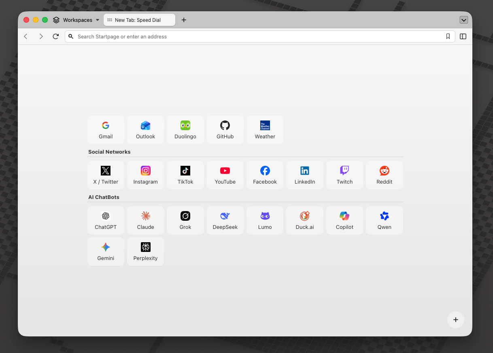

Browser extension that replaces the new tab page with a minimal speed dial, automatically populated by the links bookmarked on the
Bookmarks/HomePagefolder.
This Chrome extension replaces the default new tab page with a minimal speed dial interface. It pulls links and subfolders from the Bookmarks/HomePage folder, allowing users to organize and access their bookmarks without Chrome’s 10-link restriction.
HomePage folder appear instantly.HomePage into categorized sections with headers.A lightweight alternative for users who prefer a straightforward, customizable new tab page.

chrome://extensions//src directoryThe extension reads bookmarks from a folder named HomePage inside your
bookmarks bar. If you don't already have one, you'll see a "No bookmarks found."
message — here's how to fix it:
chrome://bookmarks/ or about:bookmarks).HomePage in the bookmarks bar.The floating
+button in the bottom-right corner is a shortcut to the Bookmarks Manager for quick editing.